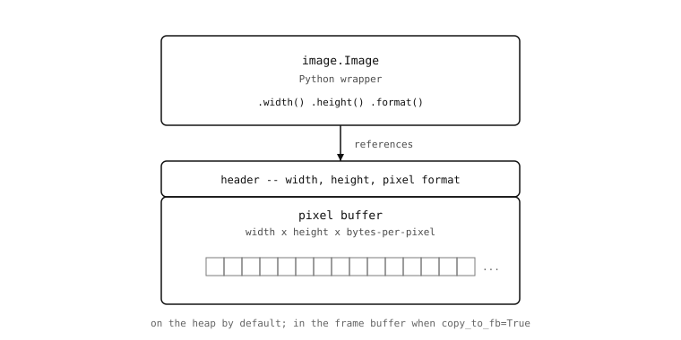

5.1. Об’єкт Image¶
Алгоритм обробки зображень проходить зображення піксель за пікселем. На кожній позиції він виконує щось просте — зчитує значення, порівнює його з порогом, поєднує з відповідним пікселем другого зображення, записує результат назад. Повторені по всьому кадру, ці прості порозрядні рішення є тим, з чого складаються виявлення меж, відстеження плям, декодування QR-кодів та всі інші класичні методи комп’ютерного зору. Щоб ефективно виконувати цю роботу, алгоритм має знати, де кожен піксель розташований у пам’яті, що насправді означає значення кожного пікселя і яку частину зображення він повинен аналізувати. image.Image — це об’єкт, який організовує цю інформацію.
Датчики зору завершили роботу в момент, коли csi.CSI.snapshot() повертає результат. Усе, що camera-side механізм зробив для отримання захопленого кадру, вже завершено; застосунок має Image в руках і потребує знати, що з ним робити.
5.1.1. Буфер та його властивості¶
Усередині Image знаходиться вказівник на суцільний блок байтів у RAM і невеликий заголовок, що містить три частини метаданих: ширину зображення в пікселях, висоту в пікселях та формат пікселів, в якому зберігаються байти. Байти — це самі пікселі, збережені в порядку рядків — спочатку всі пікселі верхнього рядка, потім усі пікселі другого рядка і так далі до нижнього. Властивості описують, як їх читати.
Ширина і висота — це прості цілочисельні значення. Формат пікселів — більш цікава властивість, адже вона визначає, скільки байтів займає кожен піксель і що ці байти кодують. Зображення у відтінках сірого містить один байт на піксель, який зберігає значення яскравості. Зображення RGB565 містить два байти на піксель, де червоне, зелене та синє поля упаковані в 16-бітне слово. Зображення Bayer містить один байт на піксель, але кожен піксель вибирається крізь один із трьох кольорових фільтрів, обраних залежно від його положення в мозаїці. Датчики зору перерахували весь каталог; важливо тут те, що рівно один із цих форматів встановлено для кожного Image, і цей вибір визначає арифметику байтів-на-піксель та значення кожного окремого байта в буфері.
Маючи вказівник на буфер, ширину, висоту та формат, будь-яка інша властивість, яка може знадобитися алгоритму, обчислюється як коротке математичне вираження. Байт, з якого починається піксель (x, y), знаходиться зі зміщенням (y * width + x) * bytes_per_pixel від початку буфера. Загальна кількість байтів — width * height * bytes_per_pixel. Адреса наступного рядка нижче знаходиться рівно на width * bytes_per_pixel байтів після початку поточного. Image надає три властивості через прості виклики методів — width(), height(), format() — а також похідний size через size(). Методи в інших частинах модуля використовують ці значення для виконання зміщувальної арифметики самостійно; код застосунку рідко потребує цього.

Image — це невелика Python-обгортка, що вказує на суцільний блок пам’яті: заголовок із шириною, висотою та форматом пікселів, за яким іде сам буфер пікселів.¶
5.1.2. Звідки береться буфер¶
Типова ситуація у цьому розділі — та, яку вже описували Датчики зору: захоплений кадр надходить із snapshot, байти знаходяться в кадровому буфері камери, а повернутий Image вказує на них. Ще три способи отримати його трапляються регулярно, і кожен з них передбачає дещо різне щодо того, де опиниться буфер.
Завантаження з файлу виглядає як передача шляху конструктору: image.Image("/sdcard/saved.jpg"). Модуль зчитує файл у щойно виділений буфер у Python-купі. Файли BMP, PGM та PPM декодуються під час завантаження, і результуючий Image матиме нестиснений формат пікселів. Файли JPEG та PNG залишаються стисненими — Image матиме формат JPEG або PNG, а буфер зберігатиме байтовий потік файлу практично без змін. Щоб виконувати будь-яку піксельну обробку стисненого зображення, застосунок спочатку конвертує його через to_rgb565() або to_grayscale(), і саме тут відбувається розпакування — а разом із ним і роздування купи, коли 30 КБ JPEG може перетворитися на 600 КБ RGB565. Завантаження з файлу найбільш корисне під час розробки, коли алгоритм потрібно перевіряти на відомому еталонному кадрі, збереженому поруч зі скриптом.
{kind=link}
{kind=link}
Створення з нуля — це випадок полотна: image.Image(320, 240, image.RGB565) просить модуль виділити стільки байтів у вказаному форматі, обнулити вміст і повернути обгортку. Пікселі поки що нічого не означають — вони всі дорівнюють нулю — але порожнє зображення є основою для кількох типових шаблонів: еталонні кадри, від яких віднімається поточний кадр, полотна для накладання графічних оверлеїв, бінарні буфери, що заповнюються та використовуються як маски.
Конструювання з ndarray поєднує в протилежному напрямку — від будь-яких числових обчислень назад до модуля зображень. Передача float32 ulab.numpy.ndarray конструктору створює Image, розміри якого відповідають ndarray — двовісна форма (h, w) стає зображенням у відтінках сірого, тривісна форма (h, w, 3) стає RGB565 — з масштабуванням значень float з 0.0 – 255.0 до цілочисельного діапазону пікселів. Теплова карта нейронної мережі, числовий масив будь-якого типу, будь-що, вироблене ml або ulab, стає чимось, що може використовувати сторона малювання та інспекції модуля зображень.
Усі чотири джерела повертають однаковий тип Image. Код, що використовує повернутий об’єкт, ніколи не повинен відстежувати, звідки він надійшов.
5.1.3. Два погляди на байти¶
Більшість часу код застосунку трактує Image як об’єкт зображення з типізацією — річ з іменованими методами. Інша сторона полягає в тому, що той самий об’єкт також з’являється прозоро як плоска послідовність байтів для будь-якого MicroPython API, що приймає аргумент bytes. Байти — це не копія буфера; це безпосередній погляд на нього.
Саме це дозволяє передачу захопленого кадру з камери в один рядок. Хешування, відправлення через послідовний порт, пересилання до мережевого сокета — нічому з цього не потрібен окремий крок «конвертувати зображення в байти»:
import csi
import hashlib
csi0 = csi.CSI()
csi0.reset()
csi0.pixformat(csi.RGB565)
csi0.framesize(csi.QQVGA)
img = csi0.snapshot()
uart.write(img) # transmits the raw pixel bytes
hashlib.sha256(img) # hashes the same bytes
sock.send(img) # sends them over a socket
Подання у вигляді байтів за замовчуванням є лише для читання, і це зроблено навмисно. Буфери зображень великі й іноді спільні між рівнями стеку обробки зображень, тому давати можливість випадковому buf[0] = 0 десь у глибині стека викликів мовчки пошкоджувати такий буфер — це занадто небезпечна грань. Коли застосунку справді потрібен байтовий доступ для читання-запису — наприклад, записування значення калібрування у відоме зміщення — bytearray() повертає окреме, явно призначене для читання-запису подання тієї самої пам’яті, позначаючи намір у місці виклику.
5.1.4. Де живе буфер¶
Буфери пікселів достатньо великі, тому важливо, де вони розміщені в RAM. Кадр QQVGA RGB565 — це 160 × 120 × 2 = 38 400 байтів; кадр VGA RGB565 — 614 400 байтів; вхідний кадр 224 × 224 RGB565 для класифікатора нейронної мережі займає близько 100 КБ. Python-купа на найменших камерах може складати лише кілька десятків кілобайт після запуску середовища виконання. Зберігання більше ніж одного-двох кадрів зображення в купі витіснить все інше.
Вихід полягає в тому, що буфери зображень здебільшого не живуть у Python-купі. Вони живуть у спеціальній ділянці RAM, яку Датчики зору представили як кадровий буфер — та сама пам’ять, в яку DMA камери записує захоплені кадри і з якої попередній перегляд IDE зчитує готові кадри. Більшість операцій з Image змінюють джерело на місці: алгоритм зчитує пікселі, приймає рішення, записує нові значення назад, і окреме зображення результату не виділяється. Операції, що справді породжують окремий результат — перетворення форматів та кілька інших — можуть бути попрошені розмістити цей результат у кадровому буфері через ключовий аргумент copy_to_fb. copy_to_fb=True робить дві речі одночасно: розміщує результуюче зображення в кадровому буфері, а не в купі (уникаючи тиску на купу), і робить результат наступним кадром, який відображатиметься у попередньому перегляді IDE. Додавання copy_to_fb=True до фінального кроку конвеєра, спостереження за результатом на екрані та ітерування звідти — один із найкорисніших ідіомів налагодження в обробці зображень.
Маючи обгортку з міченим буфером, чотири способи отримати його, два погляди на байти та перемикач, що вирішує, де розміщуватимуться нові, Image більше не є загадкою. Решта основоположних питань — як іменується позиція пікселя, що насправді містить кожен піксель, як обмежити операцію частиною зображення — побудовані поверх нього.